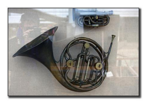
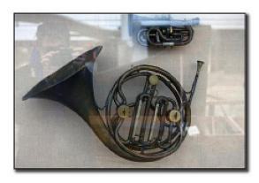
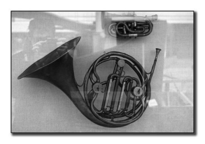
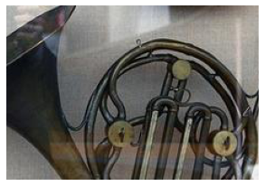
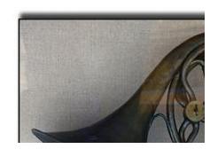
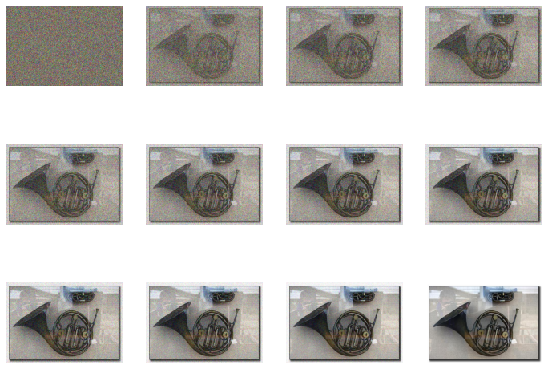
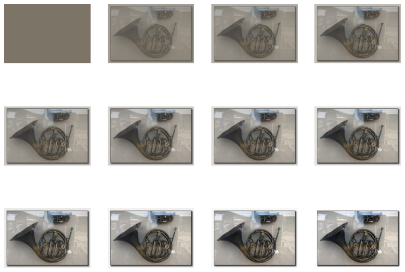
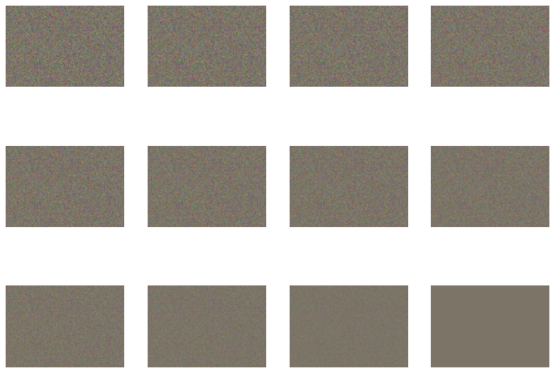

from fastai.vision.all import *path = untar_data(URLs.IMAGENETTE_320)img = array(Image.open((path/'train').ls()[0].ls()[0]))show_image(img),img.shape(<AxesSubplot:>, (320, 463, 3))
down_sized= img[:-1:2,:-1:2]//2+img[1::2,1::2]//2
show_image(down_sized),down_sized.shape(<AxesSubplot:>, (160, 231, 3))
img.transpose(2,0,1).shape,array([1/3,1/3,1/3]).shape((3, 320, 463), (3,))gray_scale= array([1/3,1/3,1/3])@img[...,None]
show_image(gray_scale,cmap='gray') #have to use cmap otherwise uses "heatmap" like coloring. <AxesSubplot:>
show_image(img[:img.shape[0]//2,:img.shape[1]//2])<AxesSubplot:>show_image(img[img.shape[0]//4:-img.shape[0]//4,img.shape[1]//4:-img.shape[1]//4])<AxesSubplot:>
show_image(img[:img.shape[0]//2:-1,:img.shape[1]//2])<AxesSubplot:>
imagenet_stats([0.485, 0.456, 0.406], [0.229, 0.224, 0.225])norm_tfm=Normalize.from_stats(*imagenet_stats,cuda=False)
def show_norm(img): show_images((norm_tfm.decode(img).clamp(0,1)),nrows=3)norm_img = norm_tfm(TensorImage(img.transpose(2,0,1)).float()[None]/255)noise= torch.randn_like(norm_img)As = torch.linspace(0,1,12)[...,None,None,None]; As.squeeze()tensor([0.0000, 0.0909, 0.1818, 0.2727, 0.3636, 0.4545, 0.5455, 0.6364, 0.7273,
0.8182, 0.9091, 1.0000])show_norm((As)**.5*norm_img+(1-As)**.5*noise)
show_norm((As)**.5*norm_img)
show_norm((1-As)**.5*noise)